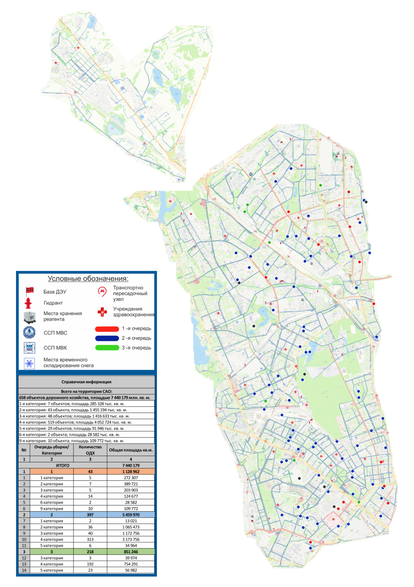

СВЕРКА ИСТОРИЧЕСКОЙ РАЗМЕТКИ
ОДХ: текущие 97 позиций 1-й очереди
Сопоставление текущих объектов с цветами старого PDF. Молжаниновский район учтён как часть САО: его отдельная врезка на PDF обработана в общей ведомости.
13
Историческая 1-я очередьКрасная разметка PDF70
Историческая 2-я очередьСиняя разметка PDF7
Историческая 3-я очередьЗелёная разметка PDF7
Ручная сверкаточечные объекты или нет считываемого цветаВизуальная проверка привязки
Точки — центроиды текущих объектов; их цвет — кандидат исторической очереди. Это контрольная иллюстрация, а не новый слой очередности.

Историческая 1-я очередьКрасная разметка PDF13
| ID ОДХ | Наименование | Уверенность | Статус | Баллы PDF: 1 / 2 / 3 |
|---|---|---|---|---|
| 10002325 | 1-я Магистральная улица | 35% | низкая уверенность | 263 / 171 / 32 |
| 10002644 | 1-я улица Ямского Поля | 20% | низкая уверенность | 45 / 36 / 0 |
| 10002204 | 2-й Боткинский проезд (Бориса Петровского) | 98% | высокая уверенность | 87 / 2 / 0 |
| 10002275 | 2-я Квесисская улица | 15% | низкая уверенность | 100 / 85 / 25 |
| 10002646 | 5-я улица Ямского Поля | 40% | средняя уверенность | 134 / 80 / 0 |
| 10002185 | Базовская улица | 60% | средняя уверенность | 77 / 8 / 31 |
| 10002241 | Дегунинская улица | 34% | низкая уверенность | 61 / 33 / 40 |
| 10002256 | Дубнинская улица | 47% | средняя уверенность | 205 / 55 / 93 |
| 10002438 | Поликарпова улица | 80% | высокая уверенность | 45 / 9 / 0 |
| 10002485 | Проезд от Бескудниковского бульвара до Дубнинской улицы у школы №183 | 100% | высокая уверенность | 29 / 0 / 0 |
| 10002487 | Проезд от Бескудниковского бульвара до проезда у торгового центра | 79% | высокая уверенность | 8 / 0 / 0 |
| 1017816137 | ТПУ Окружная | 80% | высокая уверенность | 64 / 13 / 0 |
| 10002324 | улица Ляпидевского | 71% | высокая уверенность | 86 / 25 / 6 |
Историческая 2-я очередьСиняя разметка PDF70
| ID ОДХ | Наименование | Уверенность | Статус | Баллы PDF: 1 / 2 / 3 |
|---|---|---|---|---|
| 10002203 | 1-й Боткинский проезд | 43% | средняя уверенность | 98 / 173 / 0 |
| 10002332 | 1-й Магистральный тупик | 90% | высокая уверенность | 0 / 45 / 0 |
| 10002619 | 2-й Хорошевский проезд | 74% | высокая уверенность | 0 / 46 / 12 |
| 10002624 | 2-я Хуторская улица | 44% | средняя уверенность | 54 / 275 / 154 |
| 10002645 | 3-я улица Ямского Поля | 26% | низкая уверенность | 61 / 82 / 15 |
| 10002225 | 5-й Войковский проезд | 73% | высокая уверенность | 47 / 171 / 0 |
| 10002300 | Автобусный круг у пл. «Ховрино» | 22% | низкая уверенность | 0 / 46 / 36 |
| 10002198 | Бескудниковский бульвар | 48% | средняя уверенность | 164 / 317 / 83 |
| 10002199 | Бескудниковский переулок | 6% | низкая уверенность | 30 / 32 / 0 |
| 10002342 | Бульвар Матроса Железняка | 100% | высокая уверенность | 0 / 131 / 0 |
| 10002462 | Бусиновский проезд (развязка МКАД 79 км) | 53% | средняя уверенность | 24 / 112 / 53 |
| 10002210 | Верхнелихоборская улица | 32% | низкая уверенность | 29 / 93 / 63 |
| 10002540 | Веры Волошиной улица | 5% | низкая уверенность | 5 / 16 / 15 |
| 10002232 | Вятская улица | 87% | высокая уверенность | 45 / 359 / 14 |
| 10002242 | Дегунинский проезд | 100% | высокая уверенность | 0 / 44 / 0 |
| 753906080 | Керамический проезд | 44% | средняя уверенность | 70 / 124 / 27 |
| 10002285 | Коптевская улица | 64% | средняя уверенность | 59 / 214 / 77 |
| 10002288 | Коптевский бульвар | 16% | низкая уверенность | 0 / 15 / 10 |
| 10002290 | Коровинское шоссе | 65% | средняя уверенность | 180 / 508 / 142 |
| 10002298 | Кронштадтский бульвар | 66% | средняя уверенность | 69 / 204 / 52 |
| 12344925 | Ленинградский пр-т, д.76А (тыльная сторона ТЦ Метромаркет) | 54% | средняя уверенность | 0 / 91 / 42 |
| 10002329 | Магистральный переулок | 49% | средняя уверенность | 0 / 185 / 94 |
| 10002347 | Михалковская улица | 48% | средняя уверенность | 0 / 221 / 114 |
| 10002348 | Михалковский путепровод | 87% | высокая уверенность | 0 / 159 / 20 |
| 10002374 | Нижняя улица | 98% | высокая уверенность | 1 / 44 / 0 |
| 10002359 | Новопесчаная улица | 89% | высокая уверенность | 55 / 509 / 0 |
| 10002381 | Онежская улица | 56% | средняя уверенность | 0 / 259 / 113 |
| 10002395 | Песчаная улица | 74% | высокая уверенность | 0 / 182 / 47 |
| 10002406 | Петровский парк | 100% | высокая уверенность | 0 / 218 / 0 |
| 10002411 | Планетная улица | 52% | средняя уверенность | 70 / 145 / 0 |
| 10002434 | Подъезд к префектуре (Тимирязевская ул., д. 27) | 89% | высокая уверенность | 0 / 71 / 8 |
| 10002448 | Пр-д под Краснопресненским п/п | 97% | высокая уверенность | 0 / 103 / 3 |
| 10002546 | Правды ул. | 72% | высокая уверенность | 0 / 75 / 21 |
| 10002550 | Приорова ул. | 28% | низкая уверенность | 2 / 23 / 0 |
| 10002501 | Проезд от Коровинского шоссе и разворотный круг у ТЭЦ-21 | 96% | высокая уверенность | 7 / 158 / 0 |
| 10002459 | Проезд от Ленинградского шоссе к университету Синергия (Ленинградский просп., 80Г) | 100% | высокая уверенность | 0 / 41 / 0 |
| 749196409 | Проезд от улицы Лавочкина к дому 23А | 50% | средняя уверенность | 25 / 50 / 4 |
| 10002650 | Путепровод через Дмитровское шоссе | 47% | средняя уверенность | 42 / 79 / 7 |
| 754431382 | Разворотный круг троллейбусов у метро «Сокол» | 32% | низкая уверенность | 0 / 166 / 113 |
| 10002568 | Расковой улица | 41% | средняя уверенность | 92 / 156 / 59 |
| 10002587 | Смольная улица | 82% | высокая уверенность | 31 / 250 / 45 |
| 10002592 | Старопетровский проезд | 66% | средняя уверенность | 29 / 341 / 115 |
| 10002386 | Старый Петровско-Разумовский проезд | 89% | высокая уверенность | 28 / 262 / 0 |
| 314902859 | ТПУ «Аэропорт» (Хорошевский район) | 100% | высокая уверенность | 0 / 71 / 0 |
| 314903749 | ТПУ «Аэропорт» (район Аэропорт) | 94% | высокая уверенность | 0 / 36 / 2 |
| 10002299 | ТПУ «МОССЕЛЬМАШ» района Западное Дегунино | 64% | средняя уверенность | 27 / 75 / 0 |
| 314890525 | ТПУ «Моссельмаш» (Головинский район) | 100% | высокая уверенность | 0 / 24 / 0 |
| 701406660 | ТПУ «Хорошево» | 40% | средняя уверенность | 0 / 7 / 0 |
| 666849395 | ТПУ Балтийская АвД САО | 100% | высокая уверенность | 0 / 130 / 0 |
| 12345393 | ТПУ Балтийская Жилищник Войковский | 58% | средняя уверенность | 0 / 333 / 141 |
| 314892354 | ТПУ Беговая АВД САО | 76% | высокая уверенность | 30 / 123 / 0 |
| 757159046 | ТПУ Речной вокзал АвД САО | 84% | высокая уверенность | 0 / 93 / 15 |
| 10002601 | Талдомская улица | 38% | низкая уверенность | 98 / 157 / 65 |
| 10002602 | Театральная аллея | 100% | высокая уверенность | 0 / 149 / 0 |
| 10002604 | Территория перед ст.метро «Петровско-Разумовская» | 52% | средняя уверенность | 52 / 108 / 0 |
| 751086786 | Территория у ст.м. «Беломорская» | 100% | высокая уверенность | 0 / 19 / 0 |
| 811643235 | Территория у станции метро Хорошевская | 2% | низкая уверенность | 0 / 108 / 106 |
| 10002605 | Тимирязевская улица | 72% | высокая уверенность | 27 / 549 / 154 |
| 10002554 | Улица Зарянова | 100% | высокая уверенность | 0 / 32 / 0 |
| 10002629 | Улица Константина Царева | 53% | средняя уверенность | 0 / 36 / 17 |
| 10002227 | Улица Космонавта Волкова | 84% | высокая уверенность | 2 / 89 / 14 |
| 10002614 | Фестивальная улица | 75% | высокая уверенность | 76 / 305 / 0 |
| 10002615 | Флотская улица | 70% | высокая уверенность | 79 / 278 / 83 |
| 10002622 | Хорошевское шоссе | 69% | средняя уверенность | 34 / 485 / 148 |
| 10002633 | Чапаевский переулок | 57% | средняя уверенность | 63 / 146 / 30 |
| 10002169 | улица Авиаконструктора Микояна | 87% | высокая уверенность | 28 / 208 / 0 |
| 10002667 | улица Авиаконструктора Сухого | 54% | средняя уверенность | 0 / 109 / 50 |
| 754384317 | улица Ивана Сусанина | 55% | средняя уверенность | 52 / 115 / 0 |
| 10002399 | улица Сальвадора Альенде | 80% | высокая уверенность | 12 / 61 / 0 |
| 10002577 | улица Серегина | 100% | высокая уверенность | 0 / 90 / 0 |
Историческая 3-я очередьЗелёная разметка PDF7
| ID ОДХ | Наименование | Уверенность | Статус | Баллы PDF: 1 / 2 / 3 |
|---|---|---|---|---|
| 10002221 | 1-й Войковский проезд | 28% | низкая уверенность | 0 / 72 / 100 |
| 10002397 | 2-я Песчаная улица | 7% | низкая уверенность | 122 / 152 / 163 |
| 10002194 | Беговая аллея | 52% | средняя уверенность | 30 / 48 / 100 |
| 10002201 | Библиотечный проезд | 100% | высокая уверенность | 0 / 0 / 31 |
| 10002278 | Клинская улица | 15% | низкая уверенность | 35 / 17 / 41 |
| 800905601 | ТПУ Ховрино АВД САО | 75% | высокая уверенность | 0 / 0 / 18 |
| 10002280 | улица Софьи Ковалевской | 11% | низкая уверенность | 68 / 79 / 89 |
Не определено автоматическиТребуется ручная сверка7
| ID ОДХ | Наименование | Уверенность | Статус | Баллы PDF: 1 / 2 / 3 |
|---|---|---|---|---|
| 10002556 | 4-й Ходынский проезд | 0% | нужна ручная сверка | 0 / 0 / 0 |
| 10002367 | 8-й Новоподмосковный переулок | 0% | нужна ручная сверка | 0 / 0 / 0 |
| marker-wave1-53 | Площадка у платформы «Бескудниково» и пешеходная дорожка к Керамическому проезду | 0% | нужна ручная сверка | 0 / 0 / 0 |
| 10002664 | Проектируемый проезд №6368 | 0% | нужна ручная сверка | 0 / 0 / 0 |
| marker-wave1-68 | ТПУ Речной вокзал Жилищник Левобережный | 0% | нужна ручная сверка | 0 / 0 / 0 |
| marker-wave1-91 | ТПУ ЦСКА | 0% | нужна ручная сверка | 0 / 0 / 0 |
| 10002414 | Транспортно-пересадочный узел (ТПУ) у станции метро «Водный стадион» (Площадь у станции метро «Водный стадион») | 0% | нужна ручная сверка | 0 / 0 / 0 |
Методика. Цвета считываются только с дорожных линий исторического PDF после отдельной привязки основной части карты и врезки Молжаниновского. Для каждого объекта сохранены баллы красного/синего/зелёного и статус проверки. Перед переносом результатов в интерактивную карту нужна содержательная проверка списка.